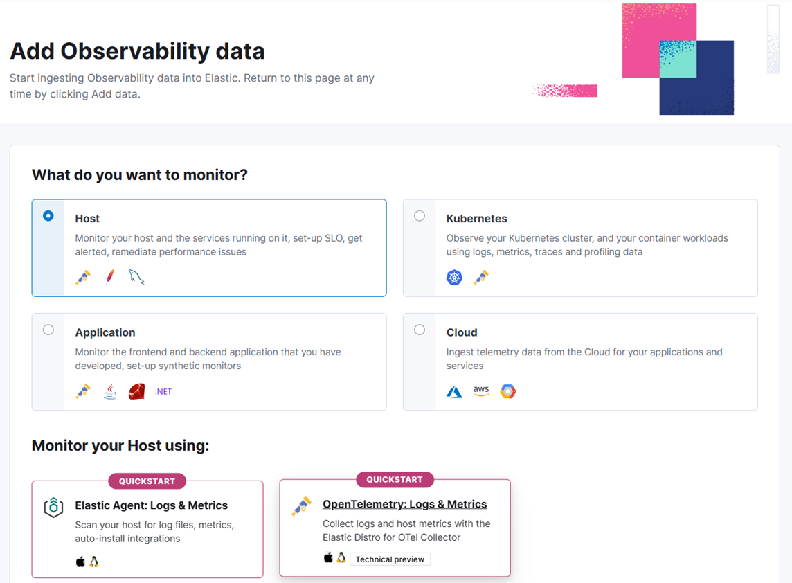

Quickstart: Monitor hosts with OpenTelemetry
editThis functionality is in technical preview and may be changed or removed in a future release. Elastic will work to fix any issues, but features in technical preview are not subject to the support SLA of official GA features.
In this quickstart guide, you’ll learn how to monitor your hosts using the Elastic Distribution of OpenTelemetry (EDOT) Collector. You’ll also learn how to use Observability features to gain deeper insight into your observability data after collecting it.
Prerequisites
edit- An Observability project. To learn more, refer to Create an Observability project.
- This quickstart is only available for Linux and MacOS systems.
- A user with the Admin role or higher—required to onboard system logs and metrics. To learn more, refer to Assign user roles and privileges.
-
Root privileges on the host—required to run the OpenTelemetry collector because of these components:
-
hostmetricsreceiver to read all system metrics (all processes, memory, etc.). -
filelogto allow the collector to read any user or application log files.
-
Limitations
editRefer to Elastic OpenTelemetry Collector limitations for known limitations when using the EDOT Collector.
Collect your data
editFollow these steps to collect logs and metrics using the EDOT Collector:
- Create a new Elastic Observability Serverless project, or open an existing one.
- To open the quickstart, go to Add Data.
- Select Collect and analyze logs, and then select OpenTelemetry.
-
Under What do you want to monitor? select Host, and then select Elastic Agent: Logs & Metrics.
 - Select the appropriate platform, and complete the following:
- For MacOS and Linux, copy the command, open a terminal on your host, and run the command to download and configure the OpenTelemetry collector.
- For Kubernetes, download the manifest.
- Copy the command under Step 2:
- For MacOS and Linux, run the command in your terminal to start the EDOT Collector.
- For Kubernetes, run the command from the directory where you downloaded the manifest to install the EDOT Collector on every node of your cluster.
Logs are collected from setup onward, so you won’t see logs that occurred before starting the EDOT Collector.
The default log path is /var/log/*. To update the path, modify otel.yml.
Under Visualize your data, you’ll see links to Logs Explorer to view your logs and Hosts to view your host metrics.
Get value out of your data
editAfter using the Hosts page and Discover to confirm you’ve ingested all the host logs and metrics you want to monitor, use Elastic Observability to gain deeper insight into your host data with the following capabilities and features:
-
In the Infrastructure UI, analyze and compare data collected from your hosts. You can also:
- Detect anomalies for memory usage and network traffic on hosts.
- Create alerts that notify you when an anomaly is detected or a metric exceeds a given value.
-
In the Logs Explorer, search and filter your log data, get information about the structure of log fields, and display your findings in a visualization. You can also:
- Monitor log data set quality to find degraded documents.
- Run a pattern analysis to find patterns in unstructured log messages.
- Create alerts that notify you when an Observability data type reaches or exceeds a given value.
-
Use machine learning to apply predictive analytics to your data:
- Detect anomalies by comparing real-time and historical data from different sources to look for unusual, problematic patterns.
- Analyze log spikes and drops.
- Detect change points in your time series data.
Refer to the Elastic Observability for a description of other useful features.